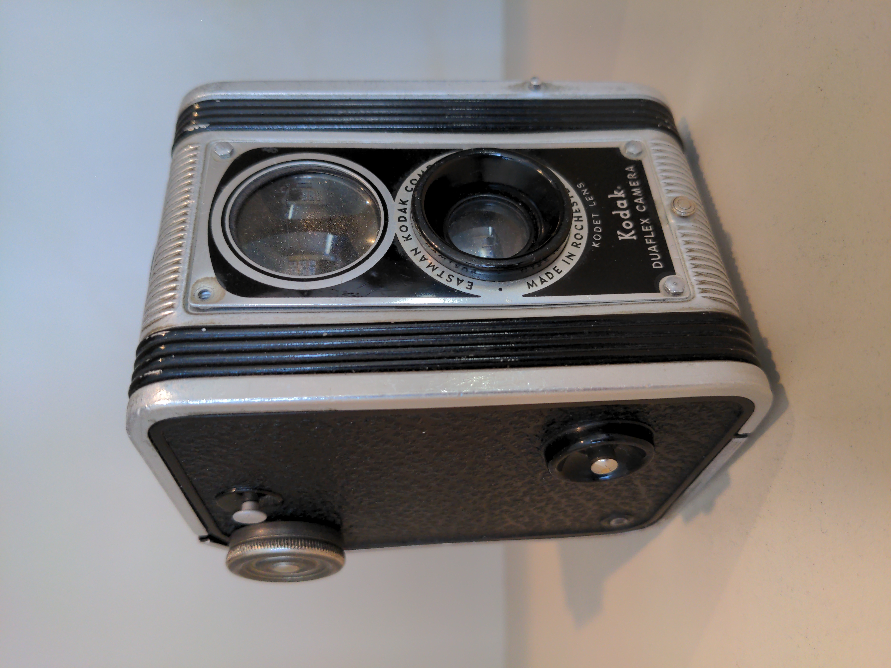

Ayer volví al pueblo después de casi diez años. La casa de mis abuelos seguía en pie,
aunque el tejado se había hundido un poco por el lado norte. Entré. Olía a humedad y a
madera vieja, ese olor que nunca se me olvidó del todo.
Encontré, debajo de una manta apolillada, un cuaderno con dibujos que hice cuando tenía
siete años; algunos eran de dinosaurios imposibles, con demasiadas patas y colas
bifurcadas, otros eran mapas de un tesoro que nunca existió pero que yo defendía con
total convicción ante cualquiera que se atreviera a dudarlo. Me senté en el suelo, entre
el polvo y los recuerdos, y estuve ahí un buen rato sin hacer nada, solo mirando.
Después salí al patio. La higuera seguía creciendo torcida, como siempre, empujando una
de las tejas del cobertizo. Recogí dos higos maduros y me los comí sentado en el escalón
de piedra donde mi abuelo solía fumar en pipa mientras contaba historias que
probablemente se inventaba sobre la marcha.
Imágenes de prueba — 5 escenarios, cada uno pensado para ejercitar una combinación
distinta de señales
Todas las imágenes son reales y verificables: dos se descargan en directo de
repositorios públicos con licencia abierta (c2pa-org/public-testfiles para
Truepic, contentauth/c2pa-rs para el C.jpg del escenario 2), y
tres son copias locales — dos de ellas (escenarios 3 y 5) de otra imagen de test de
Adobe (adobe-20220124-C.jpg, también de c2pa-org/public-testfiles,
distinta de la del escenario 2) y una (escenario 4) de la misma imagen de Truepic del
escenario 1 — con metadatos añadidos a propósito para poder probar
EXIF/C2PA/XMP/URL/contexto a la vez. Nada de datos simulados: son bytes JPEG y XMP
reales y válidos, verificados con exifr antes de usarlos aquí.
Escenario 1 — Todo apunta a humano
Truepic (verificación de cámara real). EXIF real de cámara (Google
Pixel 5, GPS) → exif-metadata hacia humano. C2PA firmado y válido, pero sin
declarar digitalSourceType → c2pa-provenance inclina levemente
hacia humano (evidencia dura, domina el resultado). Sin XMP, sin coincidencias de
URL/nombre, sin declaración en el contexto. Resultado esperado: score bajo.
Escenario 2 — C2PA declara origen de IA explícitamente
De las fixtures de test del propio SDK de referencia en Rust (c2pa-rs). Su
manifiesto declara digitalSourceType: algorithmicMedia → evidencia dura
firmada, domina el resultado casi al máximo. Resultado esperado: score muy
alto.
Escenario 3 — Señales blandas hacia IA, pero la evidencia dura las contiene
Copia local de otra imagen de test C2PA de Adobe — distinta de la del escenario 2,
del mismo repositorio que la de Truepic (adobe-20220124-C.jpg): C2PA
firmado y válido pero sin digitalSourceType declarado → leve hacia
humano, evidencia dura, igual que en el escenario 1 — renombrada a
un patrón típico de DALL·E sin renombrar
(image-url-heuristics hacia IA) y con un pie de foto que declara
explícitamente origen de IA (image-context-text hacia IA, la más fuerte de las
dos). Las dos apuntan a IA, pero son evidencia blanda — circunstancial,
fácil de montar o de evitar. Resultado esperado: el score se queda cerca de
donde lo deja C2PA (hacia humano), NO se dispara hacia IA solo por el nombre del
archivo o el pie de foto — así es como debe comportarse la fusión por niveles.
Esta ilustración fue generada por IA a modo de ejemplo para esta página.
Escenario 4 — XMP declara IA, pero sin firmar: no pesa como C2PA
Copia local de la imagen de Truepic del escenario 1 (mismo EXIF real de cámara, mismo
C2PA válido-pero-ambiguo, evidencia dura hacia humano) con un bloque
XMP añadido que declara digitalSourceType: trainedAlgorithmicMedia y
CreatorTool: "Demo Generative Tool 1.0" — sin firma criptográfica, a
diferencia de C2PA. Resultado esperado: XMP empuja con fuerza hacia IA, pero al
ser evidencia blanda (aunque explícita) no puede ganarle a la evidencia dura de C2PA,
que sigue dominando el resultado hacia humano — la misma lección del escenario
3, esta vez con una señal aún más "concluyente" en apariencia.

Escenario 5 — nombrar la herramienta sin declaración formal (EXIF + contexto)
Copia local de la misma imagen de Adobe del escenario 3 (adobe-20220124-C.jpg,
C2PA válido-pero-ambiguo, sin digitalSourceType) con
el campo EXIF Software añadido a "Midjourney 6.1" — sin decir
"generado por IA" en ningún sitio, solo nombrando la herramienta. El alt
de abajo hace lo mismo a nivel de contexto de página: menciona la herramienta sin
declaración explícita. Esto ejercita específicamente la rama
matchesKnownTool de exif-metadata y de
image-context-text — la que faltaba por probar en vivo (antes solo cubierta
por tests unitarios). Mira el desglose por señal, no solo el score global: aquí importa
comprobar que ambas señales reconocen el nombre de la herramienta por
separado.